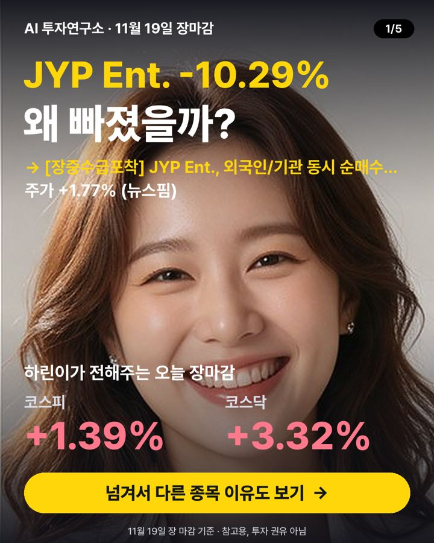

11월 19일 장마감 요약 — 코스피 +1.39%, 코스닥 +3.32%
2026-11-19 장 마감 기준 · 진행 서하린 (수급·뉴스)

오늘 코스피는 5,137.89로 +1.39%, 코스닥은 684.81로 +3.32% 마감했어요. 대형주 78종목 중 45개가 오르고 31개가 내렸어요. 원/달러 환율은 1,330원이에요.
지수 흐름
| 종가 | 하루 | 1주 | 1달 | |
|---|---|---|---|---|
| 코스피 | 5,137.89 | +1.39% | -3.83% | -7.15% |
| 코스닥 | 684.81 | +3.32% | -1.68% | -10.38% |
많이 오른 종목
- 리노공업 +7.87% · 52,800원
뉴스관련 기사: '4869' 1월로 되돌아간 코스피…시총 4천조원 붕괴(종합) (노컷뉴스) - 삼성전기 +7.68% · 883,000원
호재엔비디아와 반도체 기판·MLCC 협력 확대 소식이 주가를 끌어올렸어요 - 휴젤 +6.36% · 212,500원
뉴스관련 기사: '25돌' 맞은 휴젤 "'톡신'으로 증명한 신뢰, 세계로 뻗어간다" (의협신문) - 원익IPS +5.54% · 76,200원
뉴스관련 기사: 코스피 4869 마감 10개월만에 최저치…시총 4000조 깨져 (동아일보) - LIG디펜스앤에어로스페이스 +5.15% · 367,500원
호재연말 수주잔고 28조원 전망과 천궁‑II 증설 효과 기대가 주가를 끌어올렸어요
많이 내린 종목
- JYP Ent. -10.29% · 47,100원
뉴스관련 기사: [장중수급포착] JYP Ent., 외국인/기관 동시 순매수… 주가 +1.77% (뉴스핌) - 삼성에스디에스 -6.70% · 216,000원
중립삼성전자가 반도체 사상 최대 실적을 이끈 1970년대생 인재들을 사장으로 끌어올리며 세대교체에 나섰다. - 에스엠 -6.41% · 93,500원
뉴스관련 기사: 디에스엠, 제네시스 ‘GV90 네오룬’ 전동식 회전 시트 양산 공급 (매일경제 마켓) - SK이노베이션 -4.89% · 99,300원
중립미래에셋증권에서 거래하는 고수익 투자자들이 20일 오전 가장 많이 순매수한 종목은 SK하이닉스로 집계됐다. - 케이티 -4.50% · 47,700원
뉴스관련 기사: 한남대, (주)케이티샛과 우주·위성 인재 양성 협약 (충청뉴스)
누가 사고 팔았나 (순매수)
| 외국인 | 기관 | 개인 | |
|---|---|---|---|
| 코스피 | -10,956억 원 | -9,330억 원 | +15,381억 원 |
| 코스닥 | -1,615억 원 | -1,065억 원 | +2,803억 원 |
내일 체크 포인트
- 외국인 흐름 — 오늘 코스피에서 -10,956억 원 순매도
- 국제유가 — 최근 한 달 -20.71%
- 미국 10년 금리 4.94% · 공포지수 VIX 30.7
- 20일 이동평균선 위에 있는 대형주 25/78종목
이 글은 공개된 시세·수급 데이터와 그날 뉴스 제목을 정리한 참고 자료이며 투자 권유가 아닙니다. 시세는 거래소 종가 기준이고, 투자 판단과 결과의 책임은 본인에게 있습니다.